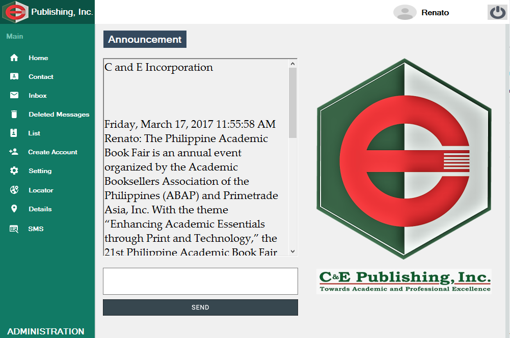
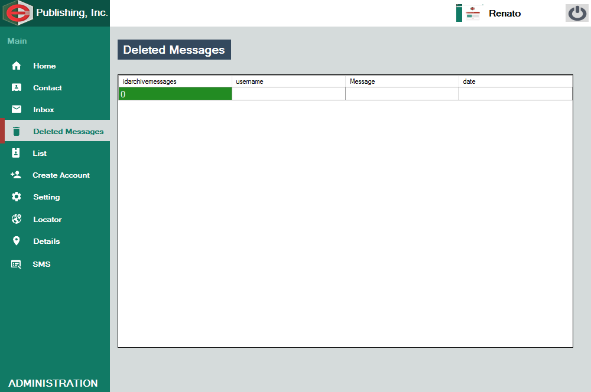
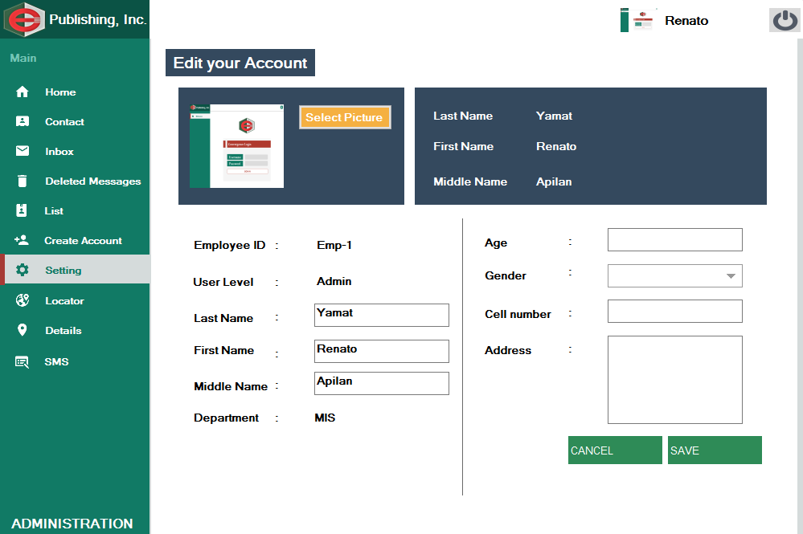

<Doctype! html>
<html>
<link rel="stylesheet" href="bootstrap.min.css">
 <link rel="stylesheet" href="css.css">
  <script src="jquery.min.js"></script>
  <script src="bootstrap.min.js"></script>
    <script type="text/javascript" src="jquery-2.1.3.min.js"></script>
    <script type="text/javascript" src="cycle2.js"></script>
	
	<body background="white" style="background-size:repeat; opacity:.9;">
	<div class="rcm">
			</img>
			<div class="cnecontainer">
			<p id="rcm" style="font-family:Roboto;margin-top:-4%; margin-left:4%; ">Login</p>
		</div>
	</div>	
	<div class="rcms">
			</img>
			<div class="cnecontainer">
			<p id="rcms" style="font-family:Roboto;margin-top:-4%; margin-left:4%;">Home</p>
		</div>
	</div>	
	<div id="cemen">
			<p style="font-family:Roboto; padding-bottom:5%;padding-top:5%;">Chat Application with Employee Locator for C and E Publishing Inc</p>
		</div>
		<ul class="pbs" style="margin-left:7%;list-style:none;">
			<label style="margin-left:-5%;">Module</label<br>
			<li>Login</li>
			<li>Admin</li>
			<li>Office Staff</li>
			<li>Head Department</li>
			<li>Receptionist</li><br><br><br><br><br>
			<li></li>
			<li></li>
			<li></li>
			<li></li>
			<li></li>
			<hr style="border-color:black;">
			<li>Description <br>Chat Application with employee locator is system analysis and design project.This system can create user account and update user account, allow user to login base on the user level and they redirect to specific windows from where they belong and allow also to logout. This system can make announcement that will show on different user form. its support private messages can with notification. super user allow to locate employee location with the help of mobile application that installed on the office employee`s.</li>
		</ul>
	<div id="container">
		<div id="slideshow" class="cycle-slideshow"
		data-cycle-fx = "fade"
		data-cycle-speed = "600"
		data-cycle-timeout = "0"
		data-cycle-pager = "#pager"
		data-cycle-pager-template ="<a herf='#'>"
		data-cycle-next = "#nextchat"
		data-cycle-prev = "#prevchat"
		data-cycle-manual-fx = "scrollHorz"
		data-cycle-manual-speed = "400"
		data-cycle-pager-fx = "fade">
        
        
		
		
		
		
		
		
		
		
		
		
		
    </div>
    <div id="pager"></div>
    
    
</div>
<a href="index.html"><input type="button" name="Back" value="Back"></a></input>
	</body>
	<script src="http://ajax.googleapis.com/ajax/libs/jquery/1/jquery.min.js"></script>
<script src="jquery.fittext.js"></script>
<script type="text/javascript">
		$("ul").fitText(1.2, { minFontSize: '8px', maxFontSize: '25px' });
		$("#rcm").fitText(1.2, { minFontSize: '10px', maxFontSize: '20px' });
		$("#rcms").fitText(1.2, { minFontSize: '10px', maxFontSize: '20px' });
		$("#cemen").fitText(1.2, { minFontSize: '10px', maxFontSize: '75px' });
	</script>
</html>